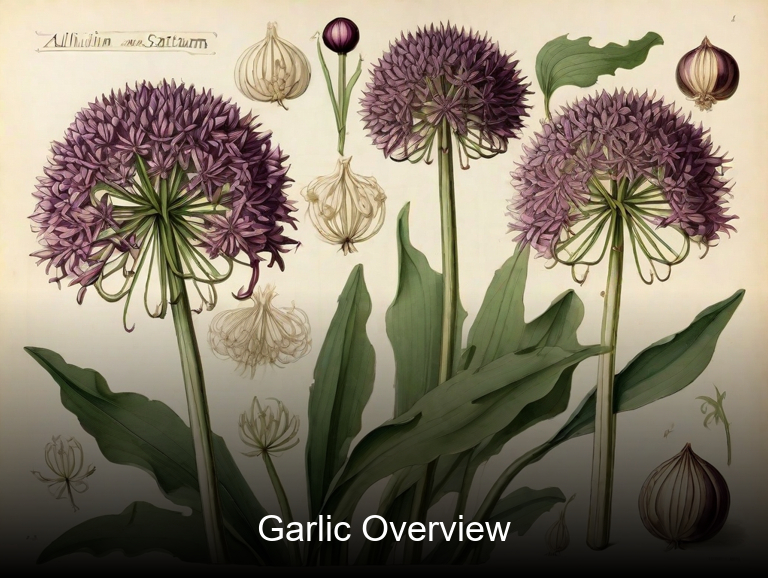
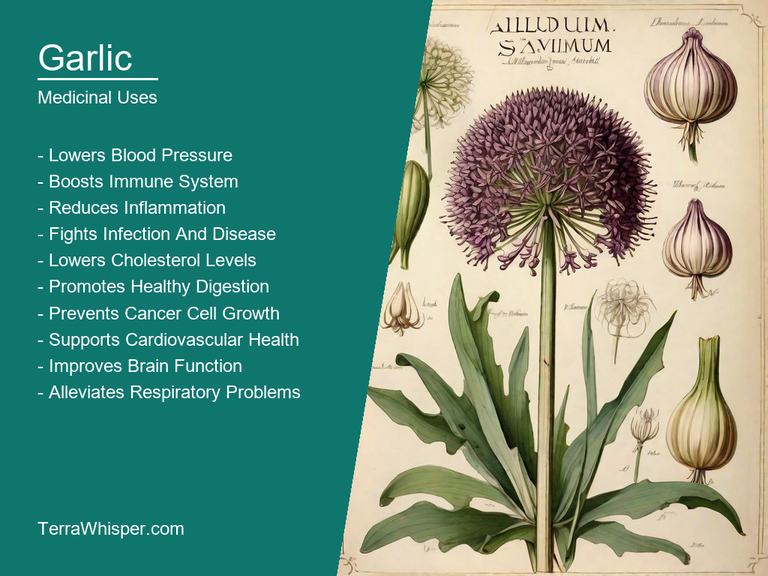
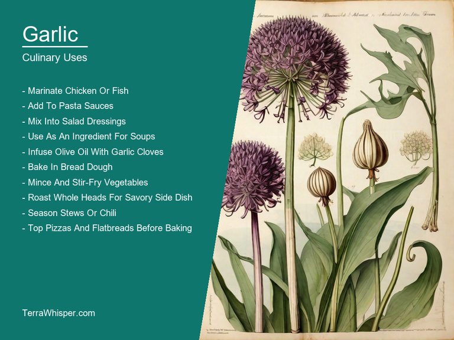
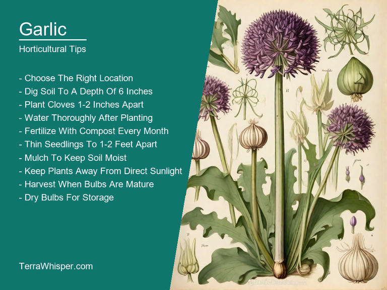
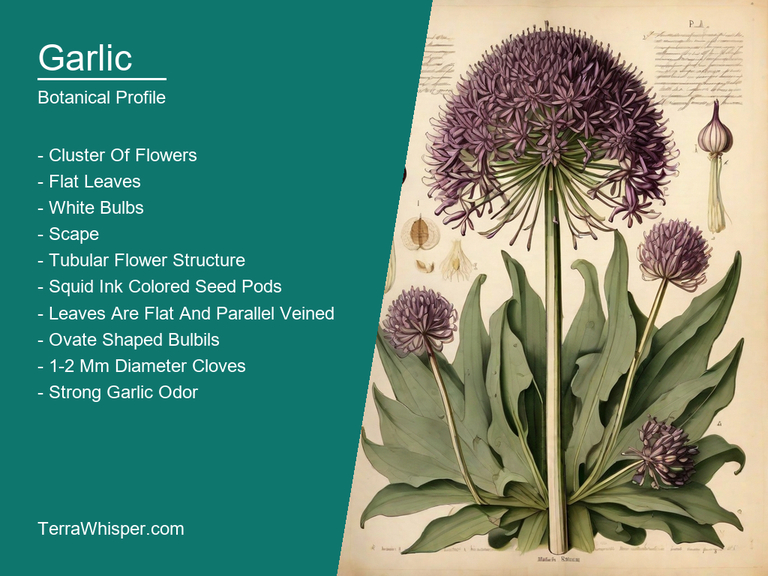
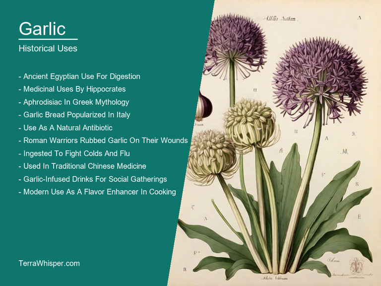

Garlic, scientifically known as Allium sativum, is a widely cultivated plant for both its medicinal and culinary uses. It has been used for thousands of years to treat various ailments such as infections, high blood pressure, and high cholesterol levels. The bulbs can be eaten raw or cooked, and are often used as an ingredient in many dishes around the world. They have a distinct pungent aroma when sliced, which is believed to be due to the presence of sulfur-containing compounds such as allicin.
From a horticultural perspective, garlic plants are hardy perennials that grow best in well-drained soil and full sun. They typically produce long green leaves that surround a central bulb composed of multiple individual cloves. When cultivated properly, these plants can yield large amounts of high-quality garlic bulbs which can be stored for several months before use. Due to its strong scent, it is often used as an ornamental plant in gardens due to its attractive foliage and unique flowers which bloom during late summer.
Botanically speaking, Allium sativum belongs to the amaryllis family (Amaryllidaceae) and is native to central Asia. The genus name "Allium" comes from the Latin word 'allere', meaning pungent odor or bitter taste, which accurately describes this plant's characteristic flavor profile. Its historical use dates back thousands of years; evidence suggests that garlic was being used for medicinal purposes in ancient Egypt, China, and Greece. The use of garlic has continued throughout history across different cultures, making it one of the most widely recognized plants globally.
In this article, you will discover what are the medicinal and culinary uses of garlic. Then, you'll learn how to cultivate it, what is its botanical profile, and how it was used historically.
Garlic (Allium sativum) has many health benefits, such as lowering blood pressure, reducing cholesterol levels, and protecting the immune system against viral and bacterial infections. It also aids digestion, improves cardiovascular health, and helps prevent certain types of cancer.
The following illustration lists the most important uses of garlic in medicine.

The medicinal properties are derived from its sulfur-containing compounds, including allicin, ajoene, and diallyl disulfide, as well as flavonoids and trace minerals like selenium. These constituents give garlic its powerful anti-inflammatory, antioxidant, and antibacterial properties.
Garlic can be consumed in various forms to achieve these benefits. The most common ways of utilizing this herb are through fresh cloves or slices, dried garlic powder, garlic oil, and garlic supplements. It is often used as a seasoning or cooking ingredient for a pleasant flavour.
However, garlic can cause side effects in some individuals. Consumption may lead to heartburn, gas, bloating, body odor, allergic reactions, or stomach discomfort if not consumed in moderation. Garlic may also interact with certain medications, including blood thinners and drugs that suppress the immune system.
It is crucial to take precautions while using garlic for its medicinal properties. Consult a healthcare professional before consuming it, especially if you have any pre-existing medical conditions or are taking medication. Additionally, avoid excessive consumption and ensure proper storage to maintain its potency and freshness.
Garlic is a versatile ingredient used in various cuisines worldwide. It adds depth and complexity of flavor to dishes, making it an essential addition to almost any dish. In Italian cuisine, garlic is used extensively in pasta dishes, sauces, soups, and salads. In Chinese cuisine, garlic is a key ingredient in stir-fries, dumplings, and hotpots. It's also commonly used in Indian, Middle Eastern, Mexican, and Spanish cuisines. Garlic can be sautéed, roasted, grilled, pickled, or mashed, and can be added to meats, vegetables, and soups at any stage of cooking.
The following illustration lists the most common uses of garlic for culinary purposes.

Garlic has a strong, pungent taste with a slightly sweet aftertaste. When raw, it's sharp and spicy, while cooked garlic becomes milder and more mellow. The flavor intensity of garlic depends on how long it's been aged and how it's prepared. Aged garlic is sweeter and milder than fresh garlic, while roasted garlic has a rich, buttery taste. Garlic pairs well with many ingredients, including herbs, spices, oils, acids, and dairy products.
The whole garlic clove is typically used in cooking, but only the fleshy part, or bulb, is edible. The outer skin and stalk can be removed before chopping or mincing. Garlic leaves are also occasionally used as a garnish or added to dishes at the end of cooking for extra flavor and texture.
When using garlic in cooking, always use fresh garlic, as it has the strongest flavor. To maximize its flavor, crush or chop garlic just before adding it to a dish. To remove the strong odor from your hands after handling garlic, rub them with the cut side of a lemon or under cold running water. Avoid overcooking garlic, as this can make it bitter and lose its nutritional value. Finally, don't store garlic in the refrigerator, as the cold temperature can affect its texture and flavor.
Overall, garlic is generally safe to consume and widely used in various cuisines worldwide. However, like all foods, excessive consumption can lead to adverse effects. Garlic can interact with certain medications, such as blood thinners, so people with health conditions should consult their healthcare provider before consuming large amounts of garlic. In general, consuming moderate amounts of garlic is considered safe and beneficial for health.
Garlic is a hardy perennial that grows best in well-drained soil with full sun exposure. To grow garlic, start by planting cloves in early fall or late winter. Each clove should be about an inch deep and spaced about six inches apart. Cover the cloves with soil and water them thoroughly. Once the soil has dried out, cover the bed with a layer of straw or leaves to insulate it from the cold. In spring, garlic will sprout green shoots that will eventually grow into mature bulbs. These bulbs can be harvested in late summer or early fall when they are large and their skins are firm.
The following illustration lists the most important tips to cutlitvate garlic.

Garlic thrives in a variety of climates but prefers cooler temperatures. The ideal growing conditions for garlic include well-drained soil with a pH level of 6.0-7.0, full sun exposure, and moderate watering. Garlic requires about one inch of water per week during the growing season, but should be kept dry during the dormant period. To ensure optimal growth, garlic should be fertilized with an organic fertilizer once a month.
Maintenance is relatively simple for garlic. Once harvested, bulbs can be stored in a cool, dark place for several months. To extend their shelf life, simply tie the stalks together and hang them upside down. Garlic should not be refrigerated as it will sprout and turn green. If the bulb starts to sprout, simply cut off the green shoots with scissors or a knife. To prevent garlic from becoming bitter, do not let it dry out completely before storing. Instead, store it in a cool, dark place with good air circulation.
Garlic (Allium sativum) is a member of the kingdom Plantae, phylum Tracheophyta, class Magnoliopsida, order Asterales, family Alliaceae, genus Allium, and species sativum. Common names for garlic include aglio, ajo, alho, dung po, kyo-cho, leek, neep, onion, porro, pye, rakshas, shalot, shikitagawa, sokolovka, sulfoxide, and yangtze onion.
The following illustration display the botanical profile of garlic.

Garlic is an evergreen perennial herb that grows from a rosette of broad, flat leaves. The plant has a distinctive odor caused by the formation of sulfur compounds in the bulb. Garlic produces small white flowers on a spadix surrounded by bracts. The bulb develops from the fleshy base of the plant and contains several cloves or segments that can be separated for planting or cooking.
Garlic variants include garlic hardneck (Allium sativum var. ophioscorodon) and softneck (Allium sativum var. sativum). Hardneck garlic has a harder stem and more prominent bud than softneck garlic. This means that hardneck garlic must be planted deeper in the soil, which allows it to reach colder temperatures and develop a larger bulb. Softneck garlic is grown for its milder flavor and easier growing conditions.
Garlic is native to Central Asia but has been cultivated throughout the world for thousands of years. Garlic grows best in cool, well-drained soil and prefers full sun exposure. The bulb is harvested in the fall when it has matured and the outer skin has turned brown.
Garlic completes its life cycle in one growing season. The garlic flowering season occurs during spring, with the plant producing white flowers on a stalk that rises from the rosette. Once the flowers have bloomed, the bulb forms and begins to grow underground. The bulb matures in the fall and is harvested for use in cooking or for replanting.
The garlic we consume today has been a medicinal plant for thousands of years. Ancient Egyptians used it to treat digestive problems and respiratory issues. Garlic was also believed to ward off evil spirits and bring good luck. In ancient Greece, garlic was used to treat wounds and promote good health. Today, garlic is still used in traditional medicine to treat a variety of ailments, including colds, flu, and heart disease. Studies have shown that garlic has numerous health benefits, such as reducing inflammation, boosting the immune system, and improving circulation.
The following illustration lists the most well known historical uses of garlic.

Garlic has also played an important role in divination, particularly in ancient civilizations like Egypt and Greece. In Egyptian mythology, garlic was believed to have protective powers against evil spirits and was used in rituals to ward off bad luck. In Greek mythology, garlic was associated with the god Dionysus, who was believed to be the protector of wine and festivity. Garlic was also used in divination practices, such as casting spells or reading tarot cards, to help individuals communicate with the gods and gain insights into their lives.
There are many legends surrounding garlic throughout history. In ancient Rome, garlic was believed to be a powerful aphrodisiac and was used in love potions to attract lovers. In medieval Europe, garlic was associated with vampires and was believed to be the only thing that could ward them off. In more recent times, garlic has become a symbol of strength and courage in many cultures. In many traditions, garlic is seen as a powerful talisman that can protect against negative energy and bring good luck.